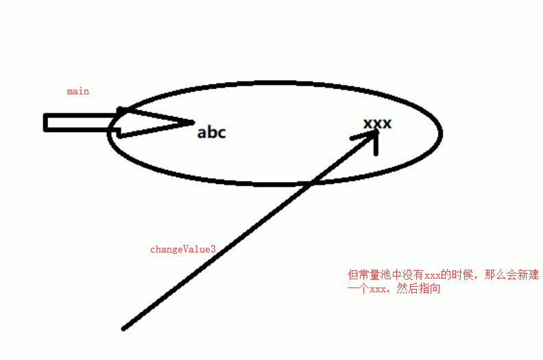

值传递和引用传递
举例
1
2
3
4
5
6
7
8
9
10
11
12
13
14
15
16
17
18
19
20
21
22
23
24
25
26
27
28
29
30
31
32
33
34
35
36
37
38
39
40
41
42
43
44
45
| /**
* 值传递和引用传递
* @author: ylyang
*/
class Person {
private Integer id;
private String personName;
public Person(String personName) {
this.personName = personName;
}
}
public class TransferValueDemo {
public void changeValue1(int age) {
age = 30;
}
public void changeValue2(Person person) {
person.setPersonName("XXXX");
}
public void changeValue3(String str) {
str = "XXX";
}
public static void main(String[] args) {
TransferValueDemo test = new TransferValueDemo();
// 定义基本数据类型
int age = 20;
test.changeValue1(age);
System.out.println("age ----" + age);
// 实例化person类
Person person = new Person("abc");
test.changeValue2(person);
System.out.println("personName-----" + person.getPersonName());
// String
String str = "abc";
test.changeValue3(str);
System.out.println("string-----" + str);
}
}
|
最后输出结果
1
2
3
| age ----20
personName-----XXXX
string-----abc
|
changeValue1的执行过程
八种基本数据类型，在栈里面分配内存，属于值传递
栈管运行，堆管存储
当们执行 changeValue1的时候，因为int是基本数据类型，所以传递的是int = 20这个值，相当于传递的是一个副本，main方法里面的age并没有改变，因此输出的结果 age还是20，属于值传递

changeValue2的执行过程
因为Person是属于对象，传递的是内存地址，当执行changeValue2的时候，会改变内存中的Person的值，属于引用传递，两个指针都是指向同一个地址
changeValue3的执行过程
String不属于基本数据类型，但是为什么执行完成后，还是abc呢？
这是因为String的特殊性，当我们执行String str = “abc”的时候，它会把 abc 放入常量池中

当我们执行changeValue3的时候，会重新新建一个xxx，并没有销毁abc，然后指向xxx，然后最后我们输出的是main中的引用，还是指向的abc，因此最后输出结果还是abc。